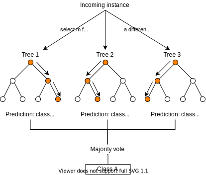

A video is essentially and ensemble of images or frames played fast enough (24 images per second) to fool the eye into perceiving it as motion. The same principle is applied for inference to count the number of people in video.
We do not need to check 24 images and count the number of people in period of 1 second! Therefore, we can skip some frames and only count people say, every 10mins. This is more practical, compute resource and memory efficient. Customer count over time can be used to correlate busy or quiet hours, days or months.
For the purpose of the demo and due to minimum compute resources, the timeslot used is in seconds. This graph can be overlaid with sales/revenue and investigate the correlation.
Generally, the more people you have in the barbershop, the more haircuts and revenue expected! Deveiation's from this hypoethesis would warrant further investigation.
Luckily, we have timestamps for every frame and so we can easily playback at that particular timestamp hence saving time.

Due to lack of real data for this specific application, we have taken a very similar dataset to which our analsis can be applied. We take a case study dataset done to figure out the best time to go to the gym from a dataset that includes the count of people in the gym every 10mins. This data presents a reasonalble to comparison to our count of people in a barbershop over time. Additionally in includes more commonly used feature sets such:
A feature correlation heatmap is presented to show how correlated the features are. The label of interes here is the number of peaple. As can be seen, with respect to number of people, timestamp, temperature and during semester have a higher correlation.
For the purpose of the demo and due to minimum compute resources, the timeslot used is in seconds. This graph can be overlaid with sales/revenue and investigate the correlation.
The data shows that the peak hours are 1700-19:00hrs during weekdays with Monday and Tuesday having a 2hr lag with later start times around 8am. Not many night owls. Average number of people is around 30 at any point in time.
Similarly for our barbershop, this can be used to benchmark and estimate customer surge, staffing and revenue expected.
Random Forest Regression is a supervised learning algorithm that uses ensemble learning method for regression. Ensemble learning method is a technique that combines predictions from multiple machine learning algorithms to make a more accurate prediction than a single model (gitConnected, 2020).
This algorithm was used as it achieved the highest accuracy score of about 91% with n_estimators = 180. With this accuracy, we can predict the number of people expected given the other features as inputs.
Random Forest models allow us to extract the what features determin the outcome or model prediction. In this case, the number of people and therefore the revenue. The weight of each feature is summarised. with time of the day being the biggest factor. But more succintly, the temperature! How is this so? This can be explained by the fact that temperature is low at nightime when people are sleeping and not in the gym. Next important features are 'during semester' and 'is weekend' which are expected.
From a business perspective, more complex models with suite of features would result in a more insightfull model other than people count. This will soon be the case with the rise of Internet of Things and sensors everywhere and in everthing. But the now, this concept leverages the existing CCTV camera video footable that is more widely available.
BizzWatch showcases a potential solution to internal theft by applying computer vision machine learning (pretrained retinanet_r101_fpn) to DETECT the number of customers in videos compared to received revenue or number of customers. Furthermore, PREDICTION of revenue using supervised machine learning random forest regression model was developed for a case study with accuracy of 91%.